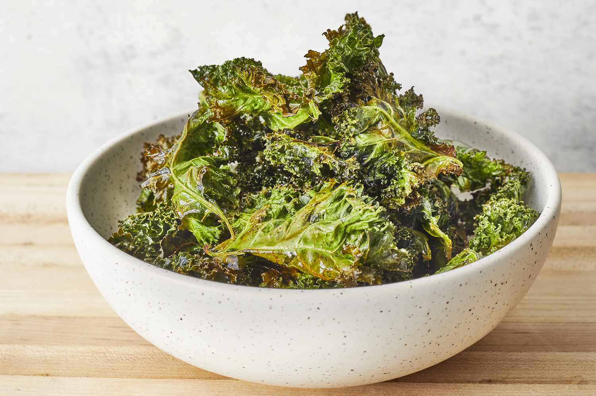

Baked Kale Chips
Wow your entire family with a delicious
bowl of Kale Chips. Topped with sea salt,
these chips are sure to bring the entire
family together with as little calories
as possible...
Ingredients
- Rinse kale with cold water. Let stand
until dry.
- Spray kale with olive oil after completely dry.
- Sear in a pan over medium heat or cook in air fryer until crisp
- Let them sit for 5 minutes to cool.
- Serve and enjoy